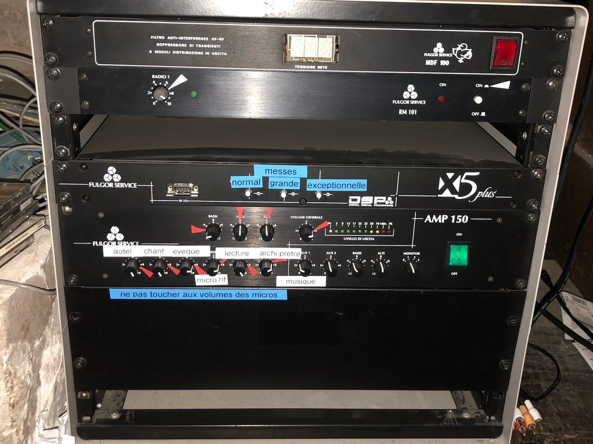

N° 01
Devis gratuit
Un spécialiste à l'écoute de vos besoins.
Installation, restauration, électrification de cloches d'église — et horlogerie électrique monumentale, depuis 1996.

« Corses, nous avons particulièrement à cœur et à souhait de conserver et de protéger le patrimoine de notre île de beauté — ainsi que celui de chacune de nos communes. »U Campanile · Piève, Haute-Corse · Depuis 1996
De l'installation d'une cloche neuve à la protection du clocher contre la foudre, le campaniste accompagne chaque édifice religieux sur la durée.
Faites appel à un campaniste expérimenté pour tous vos monuments religieux.
Forte de notre expérience depuis 1996, notre entreprise spécialisée dans l'horlogerie électrique monumentale met à votre service tout son savoir-faire. Nous sommes à votre entière disposition pour réaliser les projets de votre commune, aussi bien pour l'installation d'une cloche neuve que pour la remise en bon état de fonctionnement de vos installations déjà existantes.
Découvrez notre expertise en matière de restauration et d'électrification de cloche. Nous mettons tout en œuvre pour redonner à vos éléments leur son d'origine. Votre campaniste se déplace et analyse votre installation actuelle afin de vous établir une étude personnalisée définissant les réparations et réglages à apporter sur les cloches de l'église de votre commune.

La solution la plus adaptée pour protéger vos bâtiments religieux grâce à votre campaniste.
Votre campaniste tient également à sécuriser vos bâtiments religieux des dégâts qui peuvent être causés par la foudre, en vous proposant la pose d'installations spécifiques telles que le parafoudre et le paratonnerre.
En effet, les bâtiments religieux, et particulièrement les églises de par leur hauteur mais aussi par la masse métallique qui recouvre leur sommet, sont des victimes faciles de la foudre. Comme ils reçoivent du public, l'installation d'équipements contre la foudre est devenue une obligation. Votre campaniste vous rencontre, et vous établit une étude de risque. Il se charge également de la fourniture et de l'installation de votre parafoudre et/ou de votre paratonnerre, mais peut également intervenir si vous avez besoin d'une réparation ou d'un dépannage.
Confiez la sécurité de votre église à votre campaniste.

Un spécialiste à l'écoute de vos besoins.
Réalise toutes interventions sur bâtiments religieux.
Un professionnel disponible et une intervention rapide en cas d'urgence ou de dépannage.
La fourniture et la pose de nombreux équipements sonores.
Vous souhaitez faire sonoriser l'église de votre commune ?
Notre entreprise vous propose l'installation d'équipements sonores pour que vos cérémonies et messes soient toujours réussies.
Micro sans fil, micro simple et haut-parleurs… Demandez l'intervention de notre professionnel de la sonorisation de bâtiments religieux, pour vous assurer une bonne qualité sonore en fonction de la configuration, l'architecture et la superficie de l'édifice.
Vous souhaitez faire installer des équipements sonores dans l'église de votre commune ? Faîtes appel à notre campaniste spécialisé à Bastia, Ajaccio et dans toute la Corse.

Protégez votre clocher des salissures et des nuisances sonores.
Intervenez rapidement pour limiter les dégâts causés par une invasion de pigeons dans votre clocher. En effet, bien logés, leur prolifération et leur nidation sont une catastrophe pour votre église. Fientes, salissures, nuisances sonores… Tant de troubles que l'on refuse dans nos bâtiments religieux.
Contactez votre campaniste pour une solution radicale : le filet anti-pigeons.
Je protège mon clocher !Depuis 1996, U Campanile intervient dans les clochers des communes corses pour toute question campanaire, d'horlogerie monumentale, de protection foudre et de sonorisation d'église.
Bureau principal de l'entreprise. C'est ici qu'arrivent les appels et que se coordonne chaque intervention campanaire en Corse.
04 95 35 22 69Atelier de l'artisan campanaire. Lieu de fabrication, de diagnostic et de restauration — la cloche y passe sous les mains du campaniste avant son retour au clocher.
06 11 81 68 99Zone d'intervention sud. Le campaniste se déplace dans les communes de Corse-du-Sud pour installation, restauration, protection foudre et sonorisation d'église.
ucampanile@wanadoo.fr